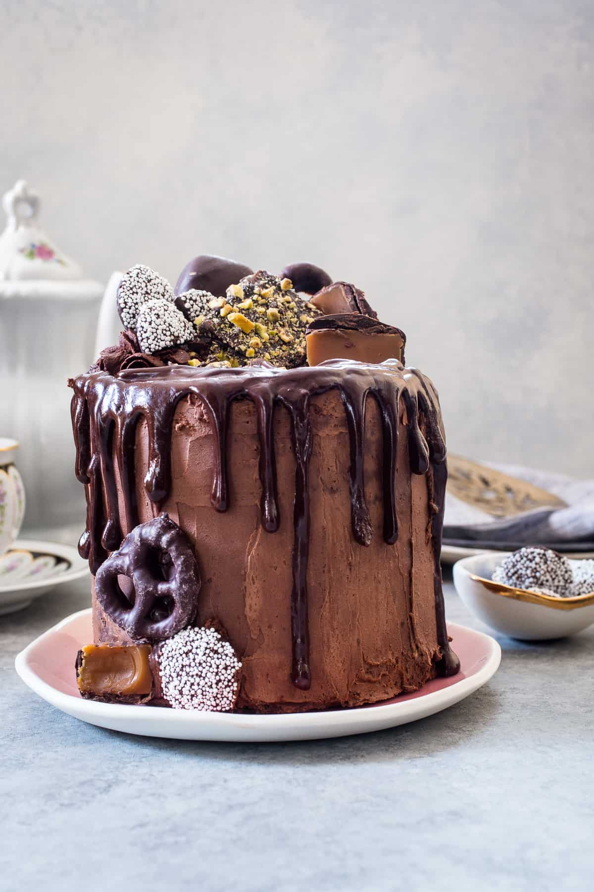
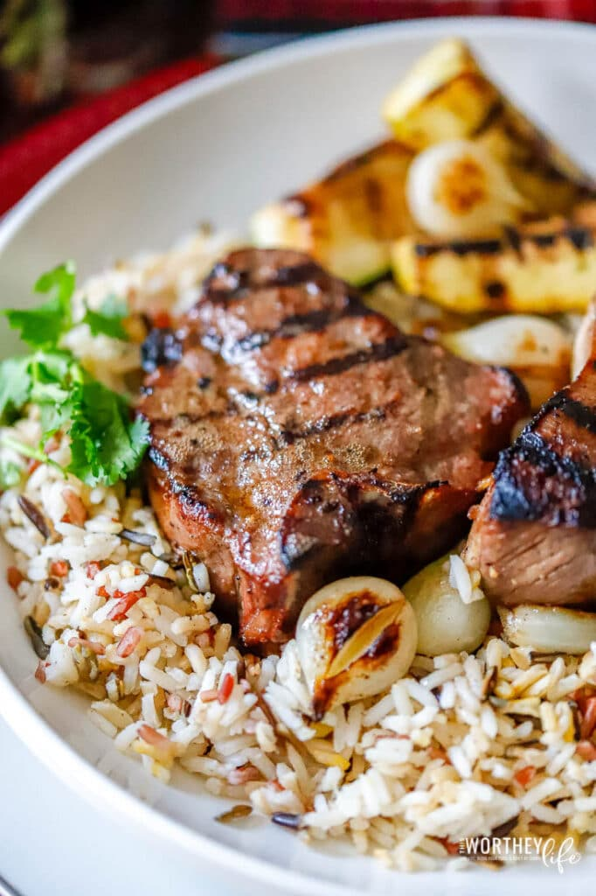
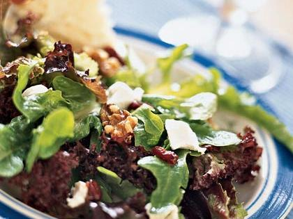
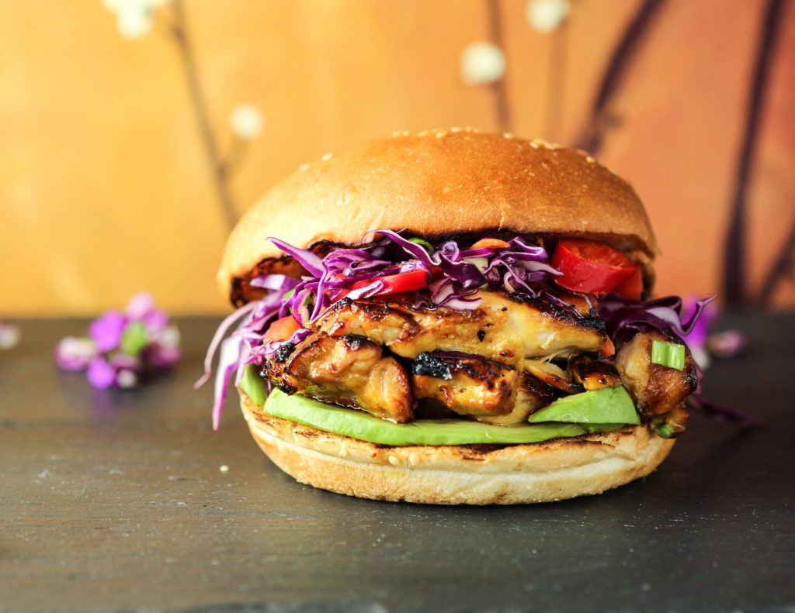
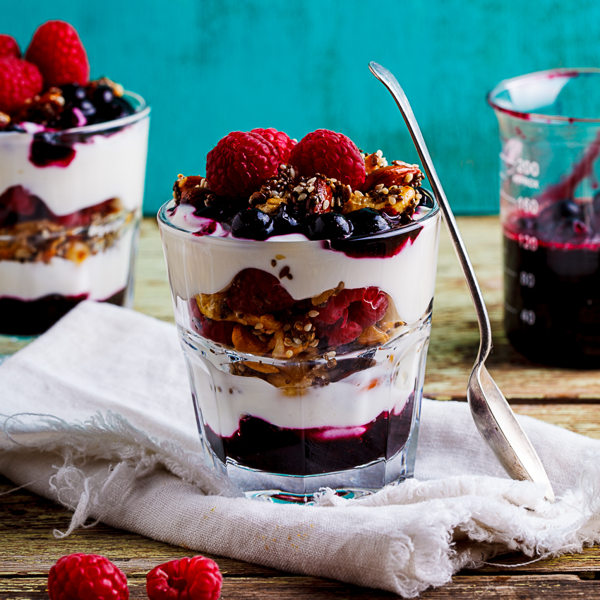
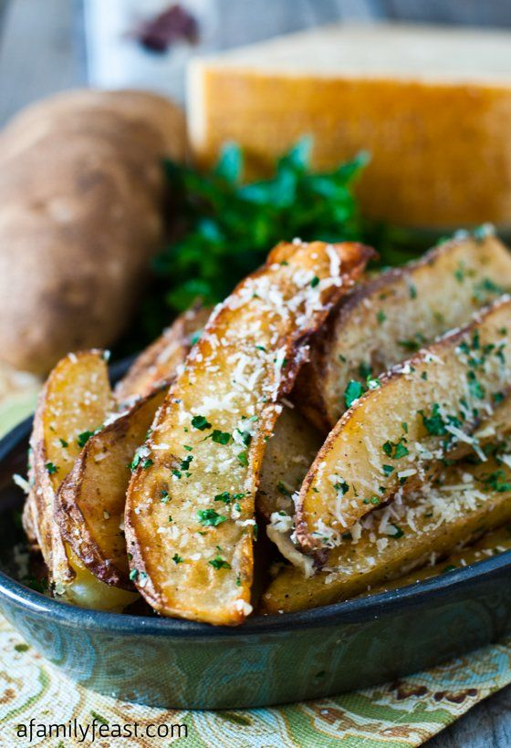
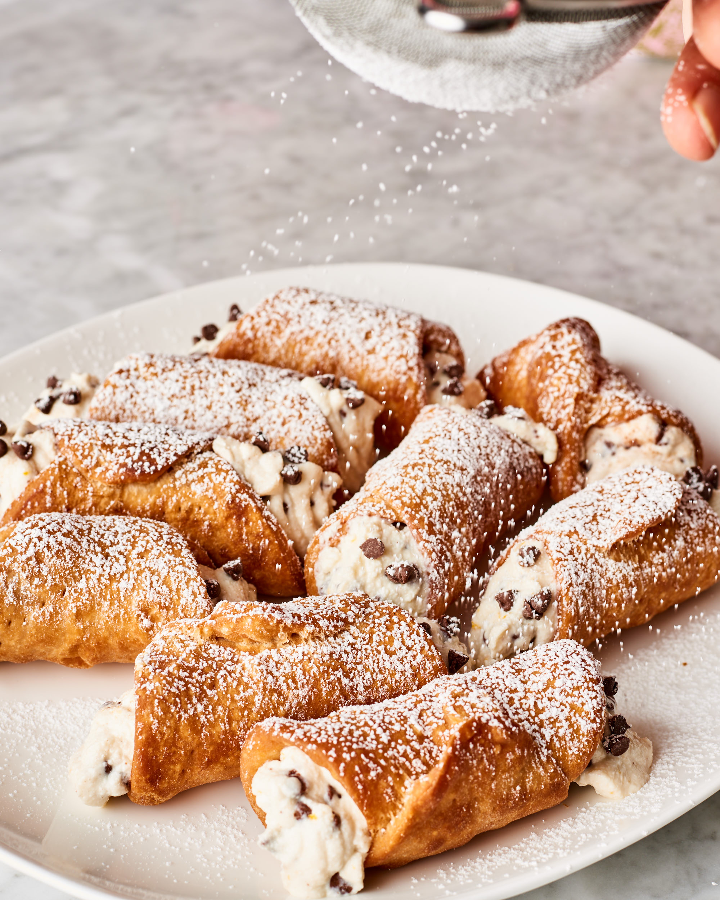
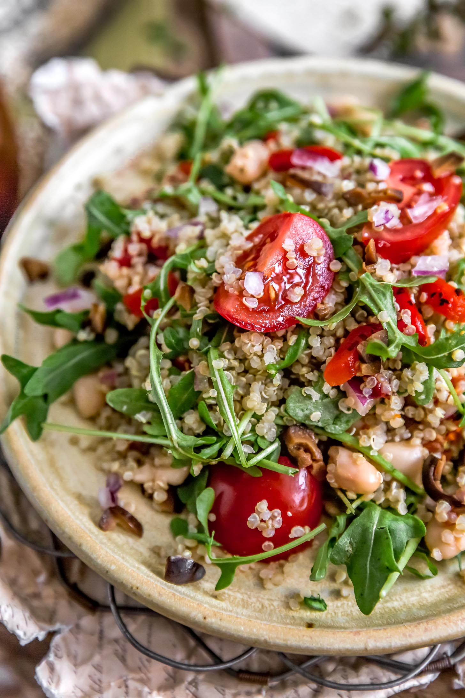

CHOCOLATE MOUSE
20 min
This delicious chocolate mousse \\ will delight dinner guests of all ages!
SMOKED LAMB WITH RICE
120 min
Want to feel like your favorite \\ relative came over and made you dinner? This comfort \\ meal of smoked lamb and rice will quickly become a \\ weekend favorite!
GOAT CHEESE SALAD
25 min
In addition to the full flavor of goat cheese, // this salad includes kale, avocado, and farro to balance it out.
CHICKEN SANDWICH
45 min
We've packed a lot into this one - shredded // cabbage, carmalized onions, deep-fried chicken, chipotle mayo, // half-sour pickles, and a toasted sesame bun will leave you thoroughly satisfied!
SWEET CURRUS
90 min
Making this classic summer treat at home will // remind you of a childhood spent in the park
BERRY PARFAIT
10 min
This low-calorie, vitamin-packed parfait is great // for breakfast, dessert, or post-workout!
TRUFFLE FRIES
Crispy fries are tossed with grated Parmesan cheese, // salt and chopped fresh parsley. Then, truffle oil is drizzled over the fries // before a final toss and this is french-fry heaven
CANOLLI
Cannoli are Italian pastries that originated on the island // of Sicily and are today a staple of Sicilian cuisine.
QUINOA SALAD
This quinoa salad is refreshing, crisp and delicious. // It's made simply with fresh cucumber, red bell pepper, red onion, chickpeas, // fresh parsley and a garlicky olive oil and lemon dressing.